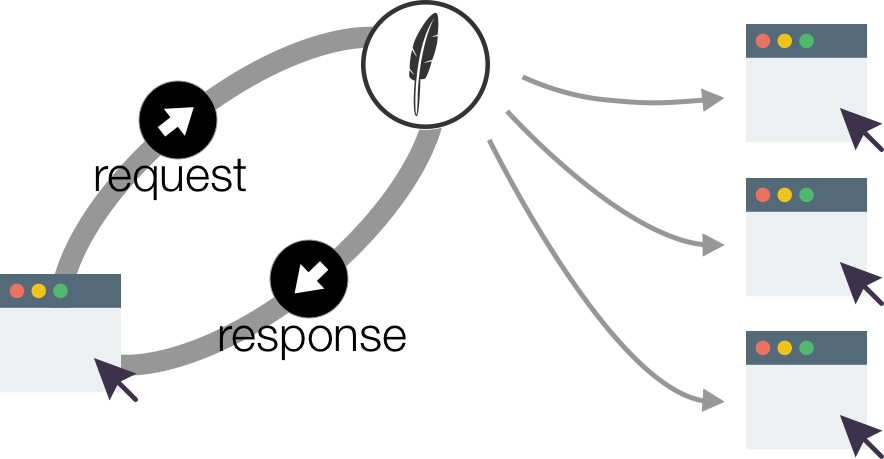

Real-time
In Feathers, real-time means that services automatically send created, updated, patched and removed events when a create, update, patch or remove service method is complete. Clients can listen for these events and then react accordingly.

The client in a chat room app, for example, could automatically receive all messages posted by any of the participants, and then display them. This is much simpler than the traditional design pattern which requires long-polling of the server.
As another example, the client could maintain a local copy of part of a database table. It can keep it up to date by listening to events for that table.
Real-time. Real-time events are sent only to Feathers WebSocket clients. They are not sent to Feathers REST nor HTTP REST clients. These would have to implement a traditional long-polling design. Conclusion: Use Feathers WebSocket clients.
Let's create an event listener for the Feathers Websocket Client we already have.
Working example
- Server code: examples/step/01/websocket/1.js
- Listener code: common/public/listener.html and listener-app.js
- Client code: common/public/socketio.html and feathers-app.js
- Start the server:
node ./examples/step/01/websocket/1.js - Start the listener by pointing a browser tab at
localhost:3030/listener.html - Start making changes by pointing a browser tab at:
localhost:3030/socketio.html
Implementing a listener
Implementing the listener common/public/listener-app.js is straight forward.
const users = feathersClient.service('/users');
users.on('created', user => console.log('created', user));
users.on('removed', user => console.log('removed', user));
console.log('Listening for user events.');
Filtering
Our listener's console displays:
Listening for user events.
created
{email: "jane.doe@gmail.com", password: "11111", role: "admin", _id: "qyRMR6abq8RHV29R"}
created
{email: "john.doe@gmail.com", password: "22222", role: "user", _id: "XI6e3bZcoupb6Hyr"}
created
{email: "judy.doe@gmail.com", password: "33333", role: "user", _id: "qeYSi2KrkwIUMoaE"}
You usually wouldn't want to send passwords to clients.
In many cases you probably want to be able to send certain events to certain clients, say maybe only ones that are authenticated.
The server can control what data is sent to which clients with event filters.

For example, we could send users events only to authenticated users
and remove password from the payload by adding this to the server code:
const users = app.service('users');
users.filter((data, connection) => {
delete data.password;
return connection.user ? data : false;
});